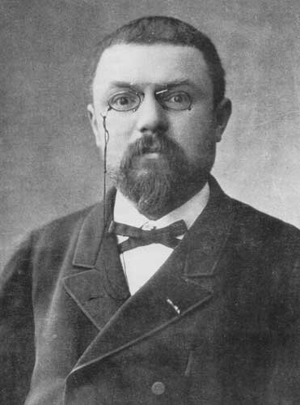

AI × TIME
CHAOS · 결정론의 두 번째 구멍
1890 · 1963
Poincaré 삼체 · Lorenz 나비효과정확히 아는데도 — 예측할 수 없습니다
법칙은 알아도
미래는 모릅니다.

H. Poincaré
1854–1912
해·지구·달처럼 별 세 개가 서로 끌어당기면 어떻게 움직일까요? 1890년 푸앵카레는 이 단순한 문제를 풀려다가 놀랐습니다. 계산식 자체는 있습니다. 그런데 — 정확한 답이 존재하지 않았습니다. 이것이 삼체 문제입니다. 류츠신의 SF 소설 《삼체》가 바로 여기서 제목을 가져왔습니다.
법칙은 알고 시작 위치도 압니다. 그런데 — 시작을 아주 조금만 다르게 잡으면 결과가 완전히 달라집니다. 결정론의 꿈에 균열이 생긴 순간입니다.
↩ 이어지는 시리즈 · 16 DESTINY
"모든 원자를 알면 미래도 안다"는 라플라스의 꿈에, 카오스는 두 번째 구멍을 냈습니다. 첫 번째는 양자역학이었습니다.
1963년 기상학자 에드워드 로렌츠는 날씨 시뮬레이션에서 숫자 하나의 소수점 셋째 자리만 바꿔 다시 돌려봤습니다. 결과 — 몇 주 뒤 예보가 완전히 달라졌습니다. 여기서 나온 말이 바로 — "브라질에서 나비가 한 번 날갯짓하면, 텍사스에 토네이도가 일어날 수 있다"는 나비효과입니다.
우주의 법칙은 정해져 있습니다. 그런데 — 시작을 완벽히 측정하는 것은 불가능합니다. 법칙 + 약간의 오차 = 현실에선 예측 불가능. 이게 바로 카오스입니다.

로렌츠 끌개 · 나비효과의 그림
▲ 세 구멍이 모였습니다
① 양자의 주사위, ② 카오스의 나비, ③ 엔트로피의 섞임. 세 가지가 합쳐져서 — 시간은 진짜로 앞으로만 흐릅니다.
CHAOS · 삼체·나비
03 / 10